Feathers and foam
-
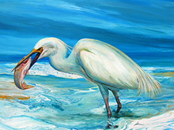
Fishing in the ShallowsFishing in the Shallows
Acrylic on Canvas, 90cmx112cm
Fishing in the Shallows was created using a mix of acrylic flow, traditional acrylic techniques, highlighted with touches of iridescent and gold paint. I tried to capture the Great Egret's intense gaze and its characteristic knife-like beak as it attempts to eat the unexpectedly large meal. The conflicting narratives underlying the scene are palpable: on one hand, the possibility of the fish being too large and escaping, and on the other, the Egret manages to swallow its prey. This tension invites viewers to decide what they wish the outcome to be. -
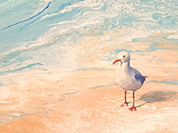
Summer SeagullSummer Seagull
Acrylic on Canvas, 45cmx65cm
The beach exudes a peaceful Summer glow due to the iridescent gold I used in the paint for the sand. It felt too desolate without anyone on it so I chose a seagull to aleviate the lonely feel of it. Despite the seagull's solitude, I feel that there is a serene and contented aura around the bird, as if it's engaged in a silent conversation with it's surroundings. -
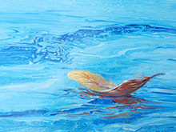
Floating FeatherFloating Feather
Acrylic on Canvas, 46cmx46cm
This was painted using flow, palette knife and brush techniques, with touches of iridescent and metallic acrylic paint. I wanted to allude to the presence of life on the water without an actual creature present. -
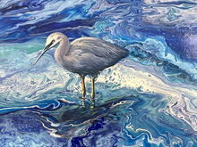
Silver Faced HeronSilver Faced Heron
Acrylic on Canvas board, Framed, 51cmx26cm
One of my favourite birds, so very fierce and delicately graceful at the same time. This work was done referencing a photograph my son took of the silver faced heron that fishes at the Lane Cove River weir. -
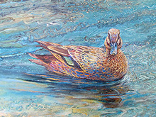
Morning Swim (Sold)Morning Swim (Sold)
Acrylic on Canvas, 50cmx60cm
This painting I did with a creek or river in mind and the Black Pacific Duck fitted the scene perfectly. -
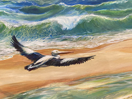
Wild WavesWild Waves
Acrylic on Canvas,
There is only a small amount of the original pour left in details in the water. This painting ended up being more traditional in approach but that is what it wanted to be. I love the contrast between the wild waves and the calm pelican coming in to land. -
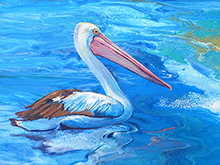
Estuary PelicanEstuary Pelican
Acrylic on Canvas, 40cmx50cm
There is a satisfying strangeness to a pelican with it's enormous beak, so graceful in the water and yet ungainly and awkward on land. Initially I thought the flow painting I created for the water looked a little like the swirls and eddies where a river meets the sea. The pelican just seemed to fit there perfectly. -
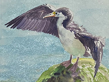
CormorantCormorant
Watercolour on Paper, Framed, 25cmx25cm
This artwork is a small watercolor exploration featuring a Cormorant. These birds stand out as one of the few species that must air-dry their wings post-swim. Their striking silhouette is both distinctive and captivating to paint. I find their remarkable ability to thrive as both avian and aquatic creatures fascinating. -
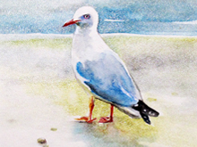
Waiting SeagullWaiting Seagull
Watercolour on Paper, Framed, 25cmx25cm
This sketch portrays a seagull waiting for a dropped morsel of food. Despite their commoness, seagulls never fail to intrigue me; they possess abundant character and provide endless amusement when observed. -
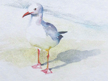
Wary SeagullWary Seagull
Watercolour on Paper, Framed, 25cmx25cm
I chose to paint this seagull because it struck me as somewhat cautious, and I found its expression intriguing. So, I made this watercolor sketch to try to capture its attitude. I then added some iridescent watercolor to the background to represent the shimmering world where seagulls live. -
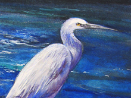
"PatiencePatience
Watercolour on Paper, Framed, 37cmx47cm
As dusk falls, a silver-faced Heron stands poised, patiently awaiting its prey, unmoving and soundless until its meal swims within reach. Through several studies of this bird, I've noticed how its appearance can change dramatically depending on the light and perspective. -
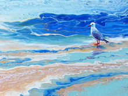
Morning MeditationMorning Meditation
Acrylic on Canvas, 90cmx112cm
Initially the pour technique I used for the water was very satisfying in how the gold, white, blue and turquoise colours interacted. I then chose to include a small happy seagull to provide a size reference and context and the pop of red of his beak and feet make this one of my favourite images. -
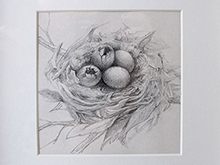
"Little nestLittle nest
Pencil on Paper, 25cmx25cm
Eggs just starting to hatch in a nest. This little pencil drawing celebrates the startof life. -
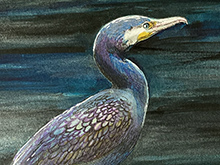
Evening CormorantEvening Cormorant
Watercolour and Pen on Paper, Framed, 35cmx45cm
A Cormorant all dried off and resting on a rock, I wanted to capture the rainbow of colours in his dark feathers, the sinewy neck and his webbed feet curled over on the rock.